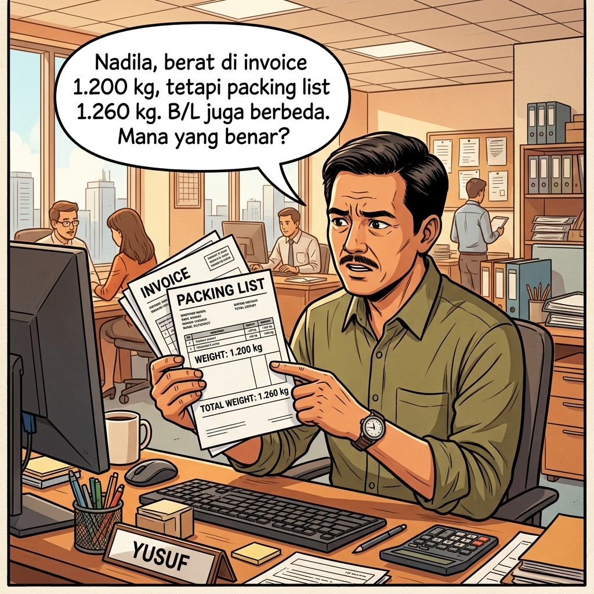
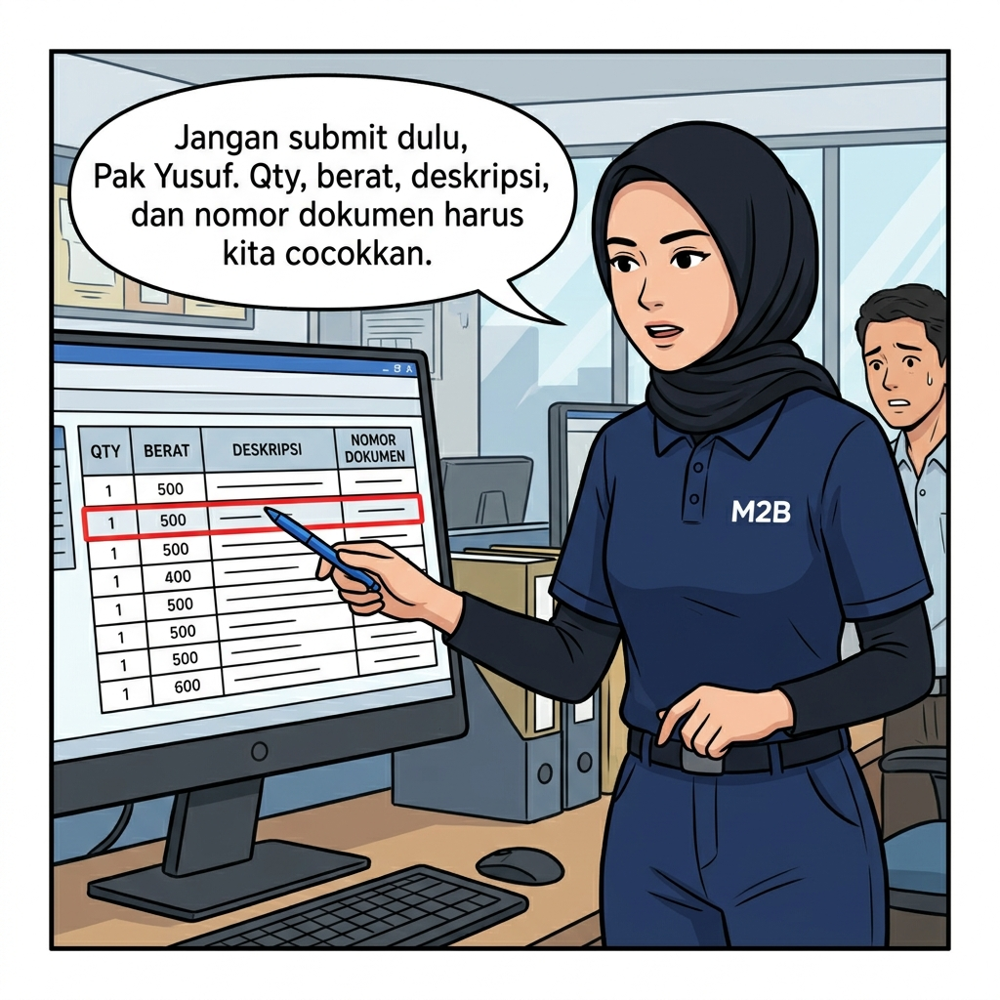
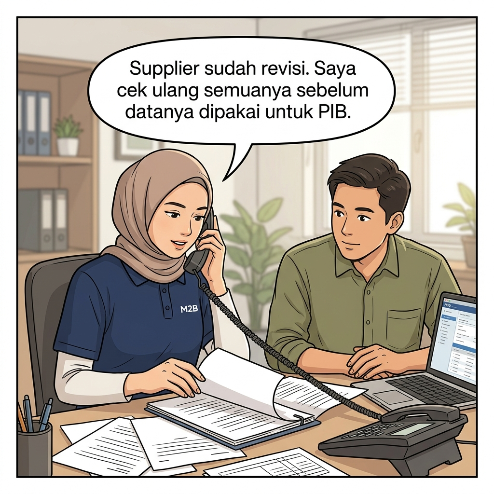
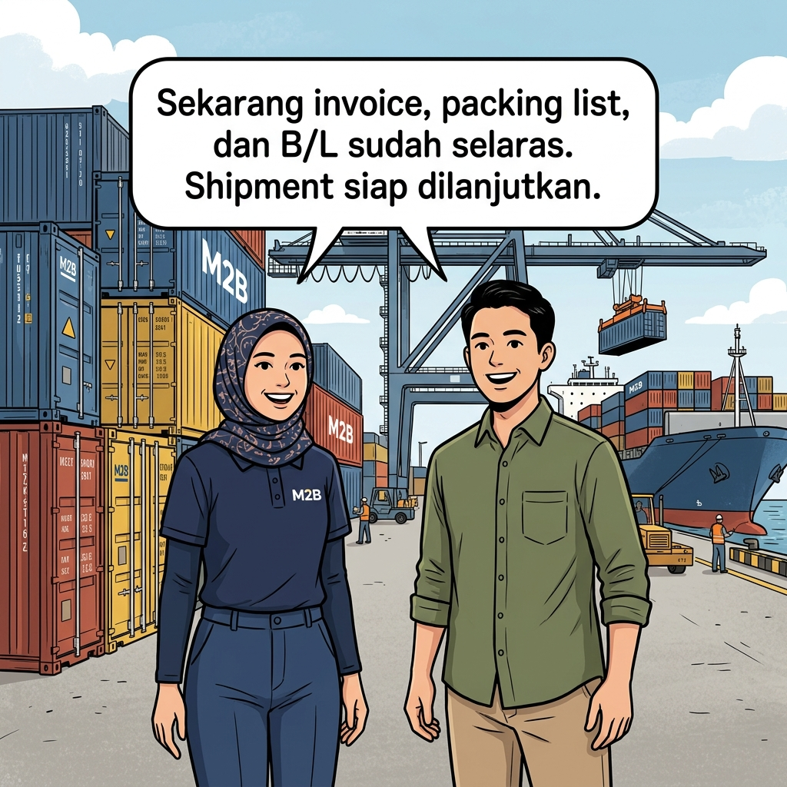

1. DATA TIDAK SAMA

Yusuf mengira selisih berat pada tiga dokumen hanyalah kesalahan kecil. Nadila melihatnya sebagai sinyal untuk berhenti, memeriksa, dan memperbaiki sebelum data digunakan dalam proses kepabeanan.




Siang itu di kantor operasional M2B, Yusuf melangkah terburu-buru dengan senyum lega. Sebagai pengusaha yang baru saja mengimpor satu kontainer 40-foot mesin industri dan suku cadang dari Shanghai, ia merasa seluruh urusan manufaktur dan pengapalan telah selesai.
"Nadila, ini berkas impor saya lengkap. Invoice, Packing List, dan Bill of Lading (B/L) sudah dari supplier. Tolong langsung submit PIB (Pemberitahuan Impor Barang) hari ini ya, supaya kontainer bisa langsung keluar dari pelabuhan begitu kapal sandar esok hari," ujar Yusuf mantap.
Nadila, penguji dokumen pabean senior di M2B, tersenyum tenang sambil menarik tumpukan dokumen tersebut. Menggunakan kacamata kerjanya, ia mulai mencocokkan setiap baris elemen data: nomor B/L, nilai CIF, uraian barang 8-digit HS Code, hingga perincian bobot barang.
Baru memasuki halaman kedua Packing List, mata Nadila terhenti. Ia mengambil kalkulator dan memeriksa ulang perincian gross weight (berat kotor).
"Tunggu sebentar, Pak Yusuf," sela Nadila halus namun tegas.
"Di Commercial Invoice tertera berat kotor total 1.200 kg. Tapi di Packing List tertera 1.260 kg, dan B/L juga memiliki angka berbeda. Mana yang benar?"
Yusuf mengerutkan dahi. "Ah, cuma beda 60 kg untuk barang seberat itu, Nadila. Cuma selisih bobot peti kayu tambahan dari pabrik. Lanjut submit saja, waktu kita makin mepet!"
Nadila menggelengkan kepala dengan penuh empati namun teguh pada prinsip kepatuhan pabean. "Di dunia logistik dan kepabeanan Bea Cukai, Pak Yusuf, satu angka berbeda pada dokumen pelengkap bisa mengubah jalur hijau menjadi jalur merah."
Banyak importir pemula menganggap ketidaksesuaian data angka pada invoice dan packing list sebagai persoalan sepele yang bisa diperbaiki belakangan. Padahal, sesuai ketentuan dalam JDIH Kementerian Keuangan tentang Dokumen Pelengkap Pabean dan PMK No. 190/PMK.04/2022 tentang Pengeluaran Barang Impor untuk Dipakai, setiap data yang diisikan ke dalam Sistem Komputer Pelayanan (SKP) Bea Cukai wajib didasarkan pada dokumen pelengkap pabean yang sah dan konsisten.
Sistem CEISA (Bea Cukai Automation Framework) bekerja secara deterministik. Ketika data PIB dikirimkan oleh PPJK, sistem akan secara otomatis memadankan (matching) data deklarasi dengan data Inward Manifest (BC 1.1) dari pengangkut (shipping line) serta dokumen pelengkap pabean.
Jika terjadi discrepancy / perbedaan data antara berat pada B/L, Invoice, dan Packing List, Algoritma Profil Manajemen Risiko Bea Cukai akan secara otomatis menandai deklarasi tersebut sebagai High Risk Discrepancy.
Deklarasi impor yang memiliki perbedaan data dokumen berpotensi besar ditetapkan masuk ke Jalur Merah. Hal ini mengharuskan kontainer dibuka dan seluruh muatan diperiksa secara fisik oleh Pejabat Pemeriksa Barang Bea Cukai di Lapter/Pelabuhan. Proses ini tidak hanya memakan waktu 3–7 hari kerja tambahan, tetapi juga menimbulkan biaya penanganan depo/terminal (stripping & stuffing).
Jika hasil pemeriksaan fisik menemukan perbedaan jumlah/berat barang yang mempengaruhi nilai pabean atau BM/PDTT (Bea Masuk & Pajak Dalam Rangka Impor), Pejabat Bea Cukai akan menerbitkan SPTNP / Notul. Selama proses penyelesaian Notul, kontainer mengendap di lini 1 pelabuhan, memicu akumulasi biaya Demurrage & Detention yang bisa mencapai belasan hingga puluhan juta rupiah.
Setiap kesalahan deklarasi atau ketidaksesuaian dokumen tercatat pada rekam jejak kepatuhan perusahaan di Bea Cukai. Jika perusahaan importir sering mengalami pembetulan akibat ketidaktelitian dokumen, status profil importir dapat diturunkan menjadi risiko tinggi (High Risk Importer), menyebabkan pengiriman-pengiriman berikutnya selalu masuk Jalur Merah.
Melihat penjelasan Nadila, Yusuf menyadari risiko besar yang mengintai. Di saat bersamaan, Bu Mayang (Direktur M2B) memberikan arahan strategis:
"Lebih baik kita tunda submit PIB selama 2 jam untuk minta supplier menerbitkan Revised Packing List resmi, daripada memaksakan submit sekarang dan kontainer tertahan 2 minggu di pelabuhan."
Tim dokumentasi M2B segera berkoordinasi langsung dengan agen pengirim di Shanghai. Dalam kurun waktu kurang dari 90 menit, supplier mengirimkan Revised Packing List & Commercial Invoice yang telah disesuaikan presisi.
Hasilnya? Setelah data konsisten diinput ke PIB dan disubmit ke CEISA, sistem menerbitkan SPPB (Surat Persetujuan Pengeluaran Barang) Jalur Hijau hanya dalam hitungan jam setelah kapal sandar. Kontainer Yusuf keluar pelabuhan dengan aman tanpa biaya demurrage sepeser pun.
Gunakan checklist ini sebelum menyetujui pengajuan PIB/PEB ke Bea Cukai: